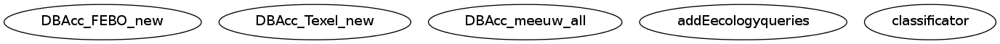

Master index
Index for ClassificationExperiments-Elena/code/Classification/scripts
Dependency Graph for ClassificationExperiments-Elena/code/Classification/scripts

Generated on Wed 18-Dec-2013 13:05:50 by
m2html
© 2005
 Master index
Master index Master index
Master index